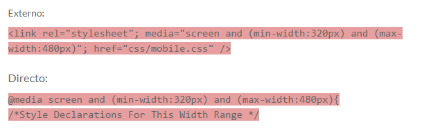

.png)
Tema 3: Sitios Responsivos con Media Queries
¿Qué son las consultas de las media queries?
Las consultas de medias permiten que las páginas web utilicen diferentes declaraciones de estilo de la hoja de estilos en función del ancho de pantalla del dispositivo en el que se muestra la página web. En el diseño web responsivo, una consulta de medios es una declaración CSS que se utiliza como parámetro para utilizar una declaración de estilo diferente en función de las dimensiones del dispositivo en el que se muestra la página web. Hay dos maneras de utilizar una consulta de medios: utilizando una hoja de estilo externa o escribiéndola directamente en la hoja de estilo.

Los códigos presentados anteriormente son ejemplos de dos formas diferentes de crear declaraciones CSS que sólo pueden utilizarse cuando el dispositivo tiene un tamaño entre 320px y 480px.
@media screen
Para aquellos que no están familiarizados con el atributo de los medios: Se utiliza para distinguir qué estilos se utilizan para diferentes tipos de medios, en este caso la pantalla. Por definición, el valor de la pantalla es principalmente para las pantallas en color y es el valor por defecto de CSS. La consulta se inicia con este tipo de medio y luego se establecen los parámetros.